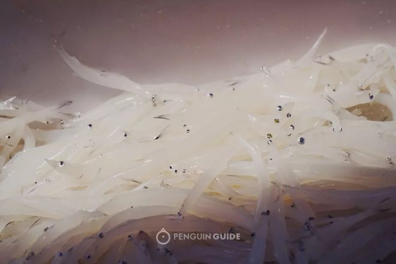
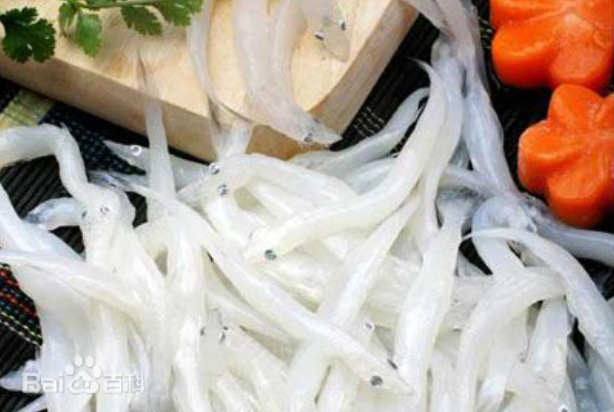

太湖银鱼，长二寸余，体长略圆，形如玉簪，似无骨无肠，细嫩透明，色泽似银，故称银鱼。春秋时期，太湖就盛产银鱼，宋代诗人“春后银鱼霜下鲈”的名句，把银鱼与鲈鱼并列为鱼中珍品。清康熙年间，银鱼就被列为“贡品”。银鱼原为海鱼，后定居在太湖繁衍，是太湖名贵特产。银鱼肉质细嫩，营养丰富，无鳞、无骨、无刺、无肠、无鳔、无腥味，可烹制各种佳肴，深受国内外消费者的喜爱。
银鱼又是江苏传统外贸产品，太湖牌冷冻银鱼在国际上久负盛名。日本人常把银鱼与鲱鱼籽、海胆酱一起，配上调味品，制成珍贵菜肴。将银鱼晒成干，色、香、味、形，经久不变。烹制前，用水浸一下，柔若无骨，制成各类应时名菜，不比鲜银鱼逊色。八十年代太湖银鱼南移滇池，西湖，成为当地的名特产。
 民间通俗的叫法：冰鱼、玻璃鱼，以其浑体透明、晶莹白皙之故。古代人又把它叫做玉箸鱼，因为它看上去像一根玉做的筷子（清杨光辅《淞南乐府》：淞南好，斗酒饯春残。玉箸鱼鲜和韭煮，金花菜好入粞摊，蚕豆又登盘）。还有一种叫“白小”，杜工部《白小》诗曰：“白小群分命，天然二寸鱼。细微沾水族，风俗当园蔬。入肆银花乱，倾箱雪片虚。生成犹拾卵，尽其义何如。”白白的，小小的，在杜甫眼里就像鱼卵，似乎行走在鱼的边缘。对于银鱼，还有些其他说法，叫“面条鱼”“绣花针”等等。
宋朝高承敷演的掌故说，当年，越王勾践正在吃一种鱼的时候，吴王夫差的军队打来，勾践遂将吃了一半的鱼倒入江中慌忙迎战。这些被吃剩的鱼在水里变作了另一种鱼，人们叫它“鱠残鱼”，即银鱼（见《事物纪原·鱠残》）。